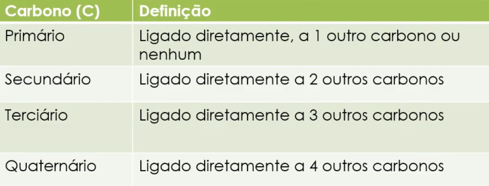
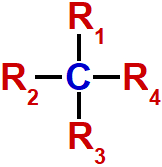
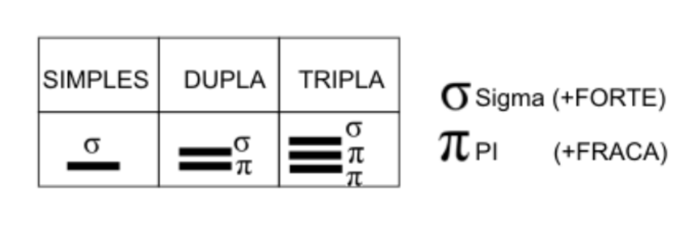
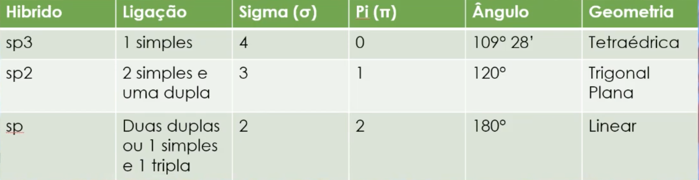

A química orgânica é o ramo da química responsável pelo estudo dos compostos que têm o elemento carbono presente em sua estrutura. Os compostos orgânicos estão presentes em todos os organismos vivos, o que faz sua importância ser maior ainda. Com o passar do tempo e com a evolução dos estudos em química orgânica, compostos deste tipo estão cada vez mais presentes no nosso cotidiano, sejam eles roupas, alimentos, plásticos, combustíveis, etc. Além do carbono, os elementos químicos hidrogênio, oxigênio e nitrogênio também são muito presentes em compostos orgânicos.
01.1Principais características dos compostos orgânicos
- Fazem predominantemente ligações covalentes.
- Compostos formados somente por carbono, ou por carbono e hidrogênio, são apolares. Quando há outro elemento além de carbono e hidrogênio na molécula, ela passa a apresentar certa polaridade.
- O carbono é capaz de se ligar a outros carbonos, formando longas cadeias carbônicas.
- O carbono é tetravalente (faz 4 ligações). O hidrogênio é monovalente, o oxigênio é bivalente e o nitrogênio é trivalente.
- Dentre as 4 ligações do carbono, pode haver ligações duplas e/ou triplas.
01.2Classificação do carbono
Em uma cadeia carbônica, o carbono pode ser classificado de acordo com o número de outros átomos de carbono a ele ligados.

01.3Outras classificações
Carbono quiral: átomo de carbono que possui 4 ligações sigma realizadas com 4 substituintes diferentes.

Carbono saturado: quando apresenta quatro ligações simples. Essas ligações são denominadas sigma (σ).
Carbono insaturado: quando apresenta pelo menos uma ligação dupla ou tripla. Essas ligações possuem uma denominada pi (π).

01.4Hibridização
Para realizar quatro ligações do tipo sigma, o carbono precisaria de quatro orbitais incompletos, responsáveis por essas ligações. Mas, ao observar os orbitais do carbono, vemos que isso não é possível de imediato.
A fim de adquirir os 4 orbitais incompletos necessários para as suas 4 ligações sigma, o carbono passa por um processo chamado de hibridização, tornando-se um elemento tetravalente.
A partir da hibridização, podemos classificar o carbono como tendo hibridização do tipo sp, sp2 ou sp3. Por exemplo:

Fonte (texto adaptado): descomplica.com.br/quimica/cursinho — acesso em set. de 2019.